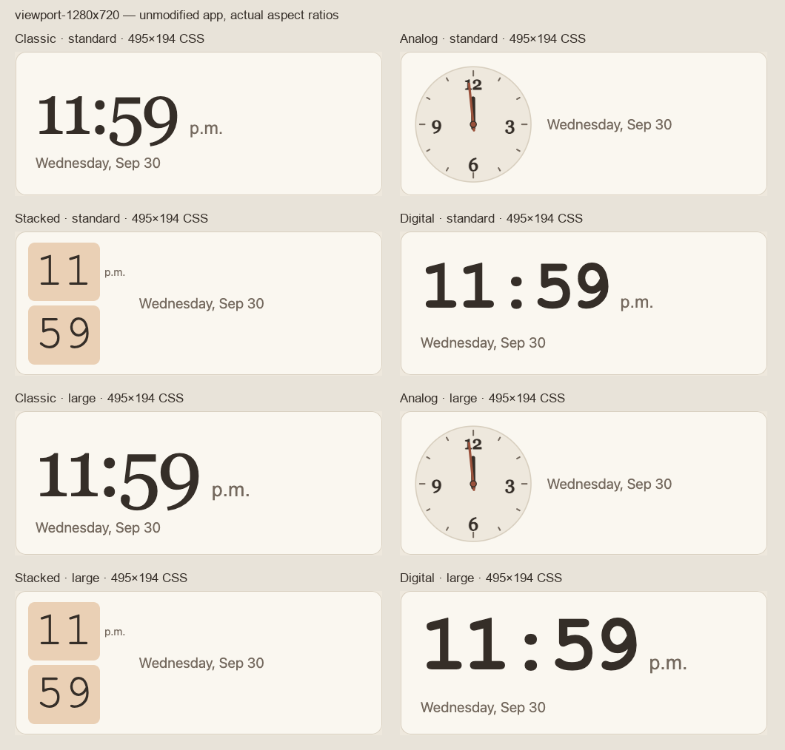

The changes I would prioritize
- Unify the time/date composition. Treat the time, period and date as one bounded group. Center that group within the module; keep the date below the time for ordinary cards. Use a deliberate side-by-side composition only for very shallow strips.
- Redraw Analog. Its oversized quarter numerals overlap the minute hand, particularly near 12, 3, 6 and 9. The inset disk and thick details add visual weight without improving readability.
- Recompose Stacked. It turns horizontal in a 324×194 card but remains vertical in a wider 495×194 card. Its period beside the hour and date beside the whole stack fragment the reading order.
- Quiet Digital. Bold Courier digits and the wide colon are much heavier than the rest of the dashboard. A restrained sans-serif display with tabular numerals would sit more comfortably beside the warm serif weather text.
- Make size and text preferences affect the complete clock. Analog and the vertical Stacked layout look identical with larger text. Dates remain small while other time displays grow. The Settings preview also needs to show the actual selected module shape.
The solution is tighter composition and more consistent hierarchy. Keep the dashboard limited to time and date: no new labels, badges, buttons or decorative content to fill the empty areas.

Current default clock module, 495×194 CSS pixels. Top four: standard text. Bottom four: larger text. These are unchanged app captures.
Classic · preserve the warmth
What works: the serif digits belong with Skylit’s weather typography and warm surfaces. It is the strongest starting point.
What fails: the time/period gap is excessive, the date does not scale with the time, and a large card leaves the group far to the left. In the narrow fallback, time and date are pulled to opposite ends of the card.
Exactly what I would do: keep Georgia, use a tight 4–8 pixel period gap, place the date 8–12 pixels below the digit line, and center the complete group. Size against the measured widest time in the chosen format, rather than width and height multipliers alone. Use a compact weekday abbreviation when necessary.
Full-size evidence
Analog · simplify and rebalance
What works: a dial is a useful alternative to digits. The terracotta accent is compatible with the theme.
What fails: bold numerals, heavy hands and the inset disk compete. The minute hand passes through the numeral area. In wide cards the date becomes a loose label to the right; in the minimum card the face becomes too intricate for its size.
Exactly what I would do: use the card surface for the dial, a faint outline, finer ticks, normal-weight quarter numerals, and distinct hand lengths. In a 200-unit SVG, start with ticks at radius 87, quarter labels around radius 73, hour length 39 and minute length 60. Keep hand tips inside the numeral band. Put the date below the dial except in shallow strips. Below about 110 CSS pixels of dial diameter, use clear quarter marks instead of tiny numerals.
Numeral/hand evidence
Stacked · make the arrangement intentional
What works: separate hour and minute blocks can provide a distinct, easily scanned style.
What fails: saturated tile fills dominate; orientation changes according to unrelated width/height thresholds; the period reads as a label for the hour alone. Larger text has no effect in its usual vertical arrangement.
Exactly what I would do: use two equal, softly toned tiles with tabular digits. Arrange them horizontally in landscape modules and vertically only in genuinely tall modules. Keep the period beside the completed time group, and the date in a shared footer. Apply larger text to digits and metadata together. If the default becomes horizontal, rename the style Tiles so the name reflects the design.
Small landscape · Wider, same height
Digital · modern, restrained numerals
What works: stable numeric widths are useful for a clock and distinguish it from Classic.
What fails: bold Courier looks like terminal text; the colon is disproportionately wide; the time has much more visual mass than Classic. The date is detached on the narrow fallback.
Exactly what I would do: use the existing system sans-serif with tabular numerals, a medium weight, normal or slightly tighter tracking, and a narrower, optically lighter colon. Use the same period and date rhythm as Classic. Fit the widest 12- or 24-hour display once, so the clock does not breathe or jump every minute.
Larger-text evidence
Responsive rules I would implement
Use the module’s actual CSS width and height. A 3×3 grid allocation on the frame is 239×142 pixels: it is a landscape rectangle, despite its square grid coordinates. Whole-screen resolution should not determine the clock’s composition.
| Physical shape | Composition and starting budget |
|---|
| Compact | 16-pixel inset. Time and period as one line, abbreviated date below with an 8-pixel gap. For the 239×142 minimum, a dial around 84 pixels leaves space for an 18-pixel footer; remove numeral detail before shrinking it further. Numeric clocks start around 44–56 pixels, then fit the widest time and metadata together. |
|---|
| Ordinary landscape | Center a bounded group. Time or dial above, date below. Classic/Digital roughly 64–88 pixels and date 16–20 pixels at the 495×194 baseline. Analog roughly 125–135 pixels. Tiles horizontal, with equal surfaces and modest fill. Use 16–24 pixel outer insets. |
|---|
| Very wide, shallow | At roughly width/height ≥ 4, use a centered horizontal group: time/dial followed by a short two-line date. Do not stretch digits across the strip. Keep both pieces close, with a 16–24 pixel gap. The 12×3 case is the clearest example. |
|---|
| Tall | Center the group in both axes and let available width limit type size. Date stays underneath. Analog grows to use the width with a safe inset; Tiles may become vertical when height/width ≥ 1.25 and the complete group fits. Keep generous spare space around the group. |
|---|
| Large or full module | Center the group rather than enlarging an item at the left edge. Scale the ensemble: time roughly 140–200 pixels, date 24–28 pixels, and dial at most 320–420 pixels where it fits. These are initial design bounds, subject to visual review; the clock should remain calm. |
|---|
| Larger text | Increase numeric time, date, period and Analog numerals together. The dial need not grow if its available area is fixed: increase legibility within it. Prefer an abbreviated date or simpler dial before reducing readability. Preserve the same composition and avoid clipping. |
|---|
Dimensions above are CSS pixels and proposed starting values. The frame’s 1920×1080 physical display currently corresponds to 1280×720 CSS pixels. The 1920-wide browser captures test larger CSS canvases.
Settings should preview the real composition
Render the selected clock with the same component and the draft module’s aspect ratio, scaled down as a whole. The current preview has its own fixed dimensions and arrangement; Classic/Digital even show the date beside the time, although the dashboard places it underneath. A trustworthy preview should show the layout the user is choosing.

Earlier synthetic Settings screenshot. The preview should share the dashboard renderer and selected geometry.